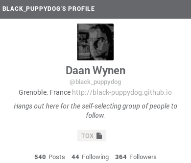
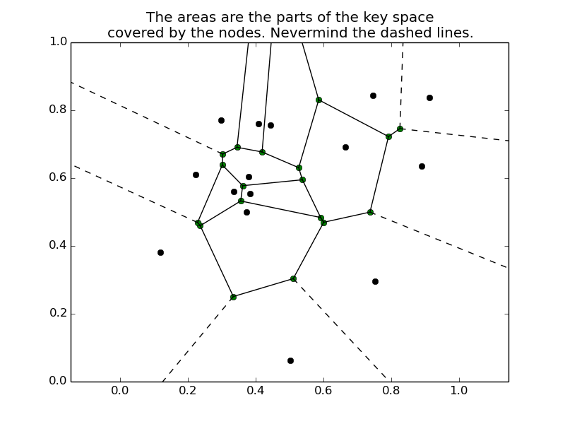
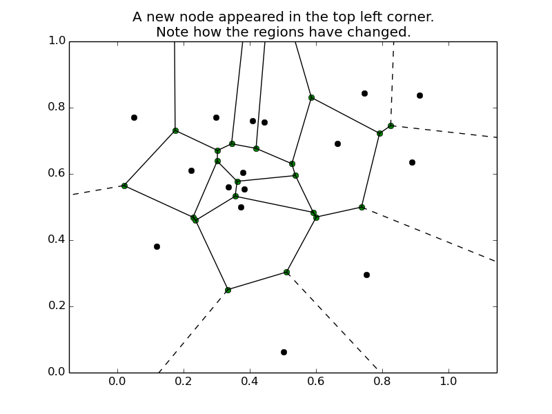
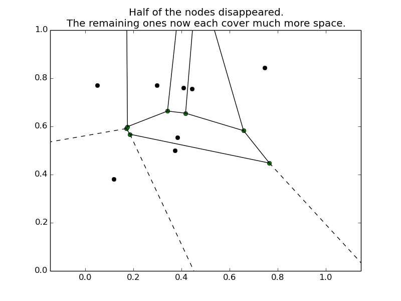

When reading about twister, the three layer model often comes up. It roughly goes like this:
- Blockchain for identity
- DHT for mutable information
- Torrent for write-only content
In this post, I am going to look at the second layer because the Distributed Hash Table (DHT) is a fascinating invention and because people (including me) tend to have trouble wrapping their head around how it works.
Disclaimer
As with my last post, I am learning about these things myself at the moment. So if you find things that are unclear, incomplete or plain wrong, please tell me!
First let us be clear what the task of the DHT is. What does and does not go into the DHT?
The DHT primarily holds mutable information such as user profiles, avatars as well as collaborative information such as mentions and hashtags. While at this point it also stores most of twister's posts, this is not why it is needed. The torrent layer could (and does) handle the storing of posts as well, the use of the DHT for them is just a performance enhancement. On the other side of "layer 2" lies the block chain which holds the "slow-moving" identity management. The block chain manages who can use which username to post by associating a public key with each username. My previous post about the blocks shows some examples.
The Regular Hash Table
Unsurprisingly, the "distributed hash table" is just a distributed version of a "hash table", a common data structure for storing and looking up data.
You can store any value in a hash table using a key, and later you can retrieve it using the same key again. For this to work, it hashes the key with a hash function, which is really just to say we derive some number from the key by which we can sort the keys. This number does not even have to be unique. Of course, if the key is already a number that is quite simple.
So fundamentally, a hash table has just two operations:
put(key, value)value = get(key)
Example: Address Book
An address book is a really simple hash table. Assuming you order your address book by last names...
- The key of an entry is the person's last name.
- The value of an entry is the contact information like phone number, email etc, so basically a long string.
- The hash function is just "Given a family name, only look at its first letter".
Say you want to store (i.e. add) a new contact. Say you want to add me, Daan Wynen, to your address book. You run my family name through the hash function, which lets you directly skip ahead to the "W" page where you then just add me to the bottom of the "W" list. You don't bother to sort that list, because there are only a handful of people there anyway.
Now, when you want to look me up, you start the same way: look at my family name, see that it starts with "W", skip ahead to the "W" page. Then you just run your finger down the list until you find me and you're done. Much faster than keeping all contacts in one big list.
What Twister Stores in the DHT
I already said that the DHT stores things like profiles and hashtags.
But what does that really mean?
Well, as many things web, twister's data is really just a bunch of json documents.
twisterd allows us to store and retrieve these using the dhtget and dhtput commands:
$ ./twisterd help dhtget
dhtget <username> <resource> <s(ingle)/m(ulti)> [timeout_ms] [timeout_multi_ms] [min_multi]
$ ./twisterd help dhtput
dhtput <username> <resource> <s(ingle)/m(ulti)> <value> <sig_user> <seq>
Here is an example:
$ ./twisterd dhtget black_puppydog profile s
[
{
"p" : {
"height" : 63503,
"seq" : 31,
"target" : {
"n" : "black_puppydog",
"r" : "profile",
"t" : "s"
},
"time" : 1417107655,
"v" : {
"bio" : "Hangs out here for the self-selecting group of people to follow.",
"fullname" : "Daan Wynen",
"location" : "Grenoble, France",
"tox" : "52166FAEB07E85551AE5C567CB37C16B31FC9F6DDCF64D2DAC7A13D426DAB976224A9A737A3C",
"url" : "http://black-puppydog.withknown.com/"
}
},
"sig_p" : "20fc80066bf07eb708d9ced08958de863f42351e60495046bced9a05afab698a9abacb7208cfc0d31635edb4357be93a1820e80ba40396226628ce6deb07dc57af",
"sig_user" : "black_puppydog"
}
]
The actual profile is held in the v field: Name, location and whatever else information the user has added.
The rest is bureaucracy:
height is the number of the newest block when this value was stored in the DHT.
This, together with the time (which is a UNIX timestamp) establishes that I changed my profile at 2014-11-27T17:00:55 UTC.
seq increments every time this entry is changed.
These three can be used to keep the DHT consistent: if some node has been disconnected for a few months and suddenly starts handing out outdated info, other nodes can simply discard it as such.
The target element holds the key of the entry; name, resource and type.
These are the ones we have to provide to twisterd.
The username argument is also (ab)used for hashtags, which can be retrieved like this:
$ ./twisterd dhtget twister hashtag m 500 500 10
[
{
"p" : {
"height" : 72459,
"target" : {
"n" : "twister",
"r" : "hashtag",
"t" : "m"
},
"time" : 1423000508,
"v" : {
"sig_userpost" : "1fd080fe37fd0c4a250005eebad68196ae62aa647ab0e3533bef7af87a5a8c3c2944ec7184bfb92dd18c439eaa4aefa3baf861a917f9c62006968c715fdd0bb292",
"userpost" : {
"height" : 72459,
"k" : 519,
"lastk" : 518,
"msg" : "With the new Raspberry Pi 2 now running a #Bitcoin or #Twister Node is easily doable. Only $50 for a Twister node. $75 for a BTC node",
"n" : "avatarx",
"time" : 1423000508
}
}
},
"sig_p" : "1f3a3bf0b704085e77918f8a7c9304c1002fd277cbbc39aad5899ff007277d761eb60be7b87d316aefb8685a109336bed41918b3dddedee897aeb10f2418228618",
"sig_user" : "avatarx"
},
...
The s(ingle)/m(ulti) argument tells twisterd if there is one unique value stored for this key or if multiple values can be stored in the DHT.
For hashtags, obviously any user should be able to store an entry, and we mostly want to retrieve more than one entry for a hashtag.
A profile on the other hand is unique to a user and thus only has one entry.
Last but not least, the sig_p and sig_user let us verify that this entry was created by a certain user using the public key stored in the block chain.
Similarly, if I want to update my profile to show off my brand-new pelican-powered blag, and I am even too smug to use the HTML interface, I can do so like this:
$ profile='{
"bio" : "Hangs out here for the self-selecting group of people to follow.",
"fullname" : "Daan Wynen",
"location" : "Grenoble, France",
"tox" : "52166FAEB07E85551AE5C567CB37C16B31FC9F6DDCF64D2DAC7A13D426DAB976224A9A737A3C",
"url" : "http://black-puppydog.github.io"
}'
$ ./twisterd dhtput black_puppydog profile s $profile black_puppydog 33
$ ./twisterd dhtget black_puppydog profile s
[
{
"p" : {
"height" : 72461,
"seq" : 33,
"target" : {
"n" : "black_puppydog",
"r" : "profile",
"t" : "s"
},
"time" : 1423003589,
"v" : {
"bio" : "Hangs out here for the self-selecting group of people to follow.",
"fullname" : "Daan Wynen",
"location" : "Grenoble, France",
"tox" : "52166FAEB07E85551AE5C567CB37C16B31FC9F6DDCF64D2DAC7A13D426DAB976224A9A737A3C",
"url" : "http://black-puppydog.github.io"
}
},
"sig_p" : "1f0c58b58cb01b2819f375510eb9e851522e816891ad88772a2151691dfb410c4e1900594b35e45eaba590faff6c5b50ffcc53e258dd0a9809556f5779e3020d87",
"sig_user" : "black_puppydog"
}
]
And sure enought, the new website also shows up in the HTML: 
This is not too surprising since the HTML/JavaScript interface makes the exact same calls to the twisterd running as server as does twisterd itself when called with the dhtget command.
How the DHT Stores And Retrieves Data
The DHT was made popular by file sharing networks like BitTorrent. If you have used BitTorrent's magnet links you have used a DHT to retrieve a .torrent file. Back in the day, these .torrent files had to be hosted somewhere and you would have to download them before you could get that movie or .iso or whatever. Now, with the DHT network, you just get the magnet link, which is a hash of the .torrent file. With this hash you then retrieve the file itself, so the hash of the file itself acts as the key to the file in the hash table. Since the hash is long this key is assumed to be unique, an assumption that seems reasonable enough given the numbers involved.
For twister, the situation is similar: the three inputs name, resource and one bit for m/s are made into a joint sha1 hash that then gets used as the key.
First, when storing a key/value pair in the DHT, the question is which node(s) should store it. Some naive strategies come to mind here:
- every node stores every key/value pair
- only one random node stores every key/value pair
Obviously, these strategies are not very suitable to the task, but using them as examples we can clearly see what we would like the Best Strategy™ to look like.
If every node stores every entry, then looking up an entry is always fast, since it is already present on the node performing the search. We like that. But that would require that every node store every entry, which can be a lot of data. And if an entry gets updated on one node, that change would have to propagate through the network, and until it would, other nodes would receive the old value when searching for the key. We don't like that...
On the other hand, if we store every pair on exactly one random node, then we save lots of storage space across the network, and also the bandwidth to send the data to every node! We like that. But then searching would take forever since we would have to ask every node if they hold the pair for the key we're searching for. We don't like that for sure...
Obviously, twister does neither of those two. In fact, twister just uses the Kademlia implementation of a DHT. Kademlia, like any decent DHT implementation, assigns a node ID to every node in the network, so in twister's case every twisterd.
The important part about these IDs is that they can be regarded as being in the same space as the keys used for storage and retrieval. One then defines a distance function between keys and node IDs. The idea is that only nodes close to an entry's key store its data.
Example: 2D Key Space
Imagine we would use a really simple distance function: The keys and node IDs are both 40 bits long. We regard the first 20 bits as an x coordinate, and the second 20 bits as a y coordinate, and we divide both of them by 2^20 so all coordinates are in [0, 1]. The distance between two points (x1, y1) and (x2, y2) is then simply the (euclidean) distance between those points. For example:  Here the points inside the polygons are the nodes and the areas around them are the regions of the key space they are responsible for.
Retrieving Data
When twisterd has created the sha1 hash of the key it starts routing towards a node that holds the corresponding data.
For this, every node holds a routing table of peers and their corresponding node IDs.
These are the DHT peers you can see on twister's Network page.
The lookup is an iterative process: on every iteration twisterd queries a node, starting with itself, for the given key.
If the current node is not responsible for the key because its node ID is not close enough to the key then the node being queried looks into its own routing table to find another node that is closer to the key than itself.
So on every iteration twisterd queries a node that is closer to the key than the last one.
If the node being queried holds the key (or the *should hold it but it simply doesn't exist) then the process finishes.
Storing Data
This is actually quite trivial. twisterd could simply send the new key/value pair to any of its peers.
Since the recipient could check if it is responsible for this key, it could decide whether to store it or to forward it to a node closer to the key.
But Kademlia is a bit cleverer than that.
Instead of relying on the forwarding mechanism it first finds a node close to the key, which is really just the same procedure as before for the look-up.
It then sends the new data this node, sparing the network a lot of forwarding messages.
Adding and Removing Nodes
People go on- and offline all the time. For the DHT network that means that nodes suddenly appear and disappear. When a node appears, it is allocated a region of the key space that it is responsible for, based on its node ID. To stay with the simple example from above:

But what happens when a node disappears, maybe because the owner of the PC running this twister server is going to bed? To prevent the data on this node from simply disappearing, every key is stored not only on one node, but on several nodes, and when a node disappears these responsibilities are renegotiated, just as they are when a node appears:

Summary
Twister's DHT is a proven system for storing data in a decentralized manner. Through the use of signatures and the public keys stored in the block chain each user keeps control over their profile information and other data. And the principle behind the DHT is even quite simple to sum up:
If I cannot help you get what you want, I know a guy who can.
I hope I got across the point that DHTs are fascinating and useful. If you like this post, please tell me. If you think it sucked, please, tell me why!